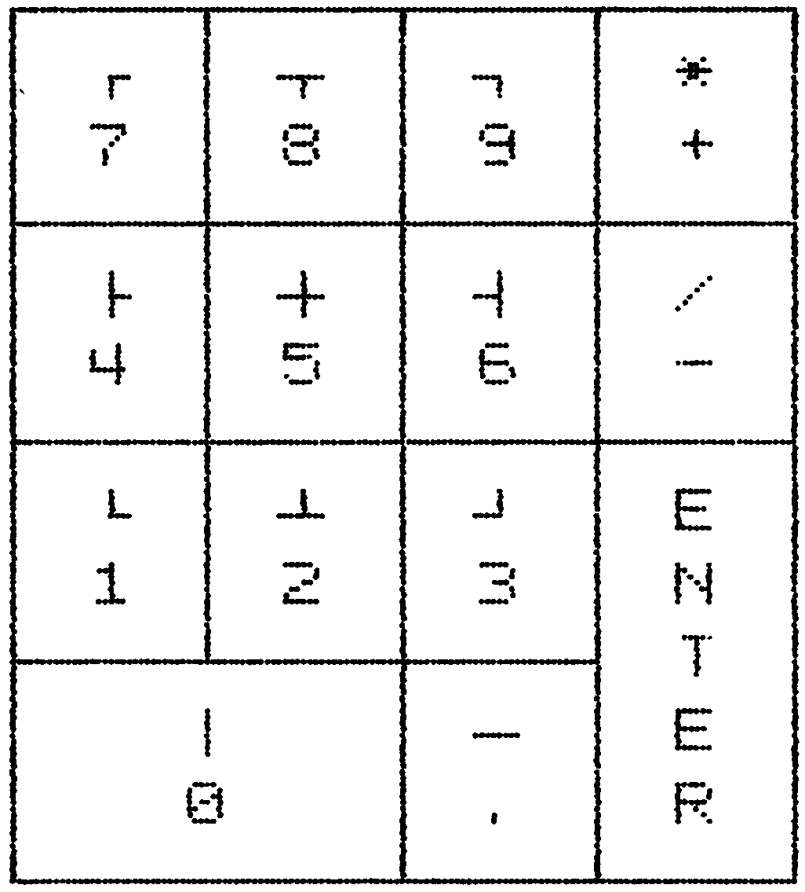

Vollgas für die Floppy 1570/71
Mit dem »FSD-System« können alle Besitzer eines 1570- oder 1571-Laufwerks jetzt aufatmen. Endlich wird die Diskettenstation auch am C 64 oder C 128 im C 64-Modus so schnell wie man es vom C 128 schon kennt. Zusätzlich bekommen Sie noch eine Vielzahl neuer Funktionen in Ihr Betriebssystem, wie zum Beispiel eine Centronics-Schnittstelle, die Ihnen die Arbeiten erleichtern.

Das »FSD-System« ist ein neues Betriebssystem für den C 64 oder den C 128 (für den C 64-Modus). Es handelt sich hierbei in der Hauptsache um einen Beschleuniger für das Diskettenlaufwerk 1570 und 1571, wobei lediglich zwei Drähte zusätzlich im Computer angelötet werden müssen.
Außer der Beschleunigung sämtlicher Diskettenfunktionen (die 1570/71 arbeitet im schnellen Burst-Modus), enthält das »FSD-System« noch eine Centronics-Schnittstelle am User-Port. Weiterhin existiert eine Eingabeunterstützung für Befehle an das Diskettenlaufwerk und natürlich die Anzeige eines Directory ohne Programmverlust.
Doch mit diesen Zusätzen nicht genug. Das »FSD-System« erlaubt das LISTen von Programmen oder Textfiles direkt von der Diskette, das MERGEn von Programmteilen und das Zurückholen von Programmen nach NEW oder einem Reset.
Das Laden von Programmen von der Diskette geschieht jetzt mit der vollen Geschwindigkeit der. 1570/ 7Zlim C 128-Modus und wird damit 7- bis 9mal schneller. Diese Funktion ist bei Bedarf abschaltbar, so daß auch »schwierige« Programme geladen werden können.
Interessant am »FSD-System« ist sicher, daß es sowohl auf einem C 64 als auch auf einem C 128 einwandfrei läuft. Beim C 128 im C 64-Modus bleiben dabei sämtliche Tasten weiterhin aktiviert, also auch der Zahlenblock des C 128. Auf dem C 64 werden diese Zusatztasten durch das Drücken von <CTRL> zusammen mit einer anderen Taste ersetzt.
Sehr durchdacht ist auch die Belegung des Zahlenblocks auf dem C 128. Hier hat sich der Autor an die Computer der CBM 8000-Reihe gehalten. Diese enthalten außer den Zahlen im Zahlenblock auch noch sämtliche Grafikzeichen für Tabellen und sind durch die <SHIFT>-Taste erreichbar angeordnet. Unter die Taste <+> wurde ein <*> gelegt, und die Taste <-> enthält über <SHIFT> ein . Ein gelungenes System also, das den Wettbewerbspreis von 2000 Mark voll verdient.
(D. Temme/ks)Lebenslauf

Am 9. Dezember 1966 wurde ich im schönen Aachen geboren, wo ich bis heute lebe. Nach dem gerade bestandenen Abitur mit den Leistungskursen Mathematik und Physik hat mich nun der Bund zum 1. Juli 1986 zum Wehrdienst einberufen.
Meine Vorliebe für das Programmieren am Computer begann schon 1980 mit dem CBM 3032 meines Vaters. Jahre später, im Oktober 1983, erwarb ich kurz vor einem hohen Preisanstieg den C 64, mit dem ich fortan glückliche Stunden verlebte, indem ich mich in Maschinensprache mühsam abquälte, nachdem schon der 200ler einen Maschinensprache-Monitor besaß und der »Neue und Bessere« nicht. Im Oktober 1985 kaufte ich mir einen Commodore 128 im Vollausbau (Floppy 1571 und Monitor 1901) in der Hoffnung, daß viele gute Programme auf den Markt kommen würden. Nach einigen kleineren SpielereienimC 128 und CP/M-Modus schrieb ich das »FSD-System 64«, um dem C 64-Modus auf Kosten der »absoluten Kompatibilität« mehr Attraktivität zu verschaffen (falls aufgrund der vielen brillanten Programme überhaupt noch möglich).
Die nächsten Programme aus meinen wunden Fingern werden wahrscheinlich »reinrassige« C 128-Programme sein, die den vorhandenen, riesenhaften, ungenutzten Speicher auch wirklich ausnutzen. Bisher stehen die Bits in der zweiten Speicherbank doch meistens in Warteposition. Dieter Temme
Die 1570/71 gibt Gas
Bei unserem neuen »Listing des Monats« handelt es sich um einen Floppy-Beschleuniger. Dieses Mal ist es die 1570/71, die nun auch am C 64 so schnell wird, wie am C 128.
Die schnellen Diskettenlaufwerke 1570 und 1571 in Verbindung mit einem C 128 werden wieder zur langsamen 1541, wenn man sie am C 64 oder am C 128 im C 64-Modus betreibt. Das vorliegende »FSD-System« #FSD« steht für »Fast Serial Disk«) ermöglicht bei geringem Hardware-Aufwand einen schnellen Disketten-Betrieb. Dabei wird beim Laden bis zum Neunfachen der Originalgeschwindigkeit erreicht, und auch die übrigen Operationen werden mehr oder weniger stark beschleunigt. Zusätzlich bietet das »FSD-System« einen Befehlssatz für den Diskettenbetrieb, die volle Tastaturbenutzung beim C© 128 im C 64-Modus (Zehnerblock und so weiter) und einige Sonderfunktionen sowie eine (zuschaltbare) Centronics-Schnittstelle am User-Port.
Beschleunigte serielle Übertragung
Die Einstellung für das Standardgerät bei LOAD, SAVE und VERIFY ist jetzt»" *",8,1« (siehe auch Bild 1). Das heißt die Eingabe LOAD wird vom Computer als »LOAD '" *" 8,l« interpretiert. Somit ist das Laden aus dem Directory jetzt ein Kinderspiel: Directory mit SYS"$" (siehe unten) anzeigen lassen, mit dem Cursor in die gewünschte Zeile »fahren« und LOAD <RETURN> eingeben oder einfach <SHIFT-RUN/STOP> drücken. Ist das absolute Laden an die Originaladresse nicht gewünscht, wird LOAD'"name'",8 eingegeben.
Als weiteren Zusatz im »FSD-System« kennt der LOAD/ VERIFY-Befehl jetzt die Angabe weiterer Sekundäradressen: Wird eine 9 als Sekundäradresse angegeben, so sendet der Computer nach dem Laden des Programms automatisch ein» U0>M0« an das Diskettenlaufwerk, so daß auch Programme, die den 1571-Modus der Floppy nicht vertragen, geladen werden können (Beispiel: »EX-DOS«. Wählt man die Sekundäradresse 7, so wird der Burst-Modus der Floppy nicht angesprochen. Die Lade/Vergleichsbeschleunigung beträgt jetzt nur den Faktor 3. Dabei ist die Kompatibilität jetzt aber am höchsten im Vergleich zur Original-Routine. Der Faktor 3 ist auch gleichzeitig die Beschleunigung beim Datei-Lesen in Maschinensprache; in Basic ist sie jedoch praktisch nicht erreichbar.
Eine weitere Neuerung ist der (nicht von Maschinensprache erreichbare) APPEND-Befehl, der mit LOAD"name'",dv,5 ausgeführt wird. Hierbei wird das Programm "name" an das im Speicher stehende Programm angehängt. Für die ordnungsgemäße Ausführung des Programms ist darauf zu achten, daß die Zeilennummern aufsteigend angeordnet sind (gegebenenfalls auch mittels Basic-Erweiterung ein RENUMBER ausführen).
Der Befehl SAVE" @:name" wurde umgeändert in ein automatisches Löschen und Speichern (Anzeige auf dem Bildschirm: »SCRATCHING name« und danach »SAVING name«, um versehentliches Zerstören der Daten auf der Diskette zu verhindern, was durch einen Betriebssystem-Fehler der Floppystation möglich ist.
Für den interessierten Leser hier die Erklärung: Wird bei SAVE mit dem »@« keine Laufwerksnummer angegeben, so überprüft die Floppystation intern, welches Laufwerk (0 oder 1) sie ansprechen soll. Dazu muß erklärt werden, daß die 1541/70/71 intern noch als Doppellaufwerk funktioniert, da das Betriebssystem von dem CBM 4040 Doppellaufwerk abstammt und für die 1541 (und damit auch für die 1570/71) nur geringfügig geändert wurde. Der Test auf eine eingelegte Diskette in Laufwerk 1 führt (intern) zu einem Fehler, der zur Folge hat, daß auf Laufwerk 0 gespeichert wird. Nun wäre alles in Ordnung, wenn nicht für »Replace« alle verfügbaren Puffer der 1541/70/71 benötigt würden. Durch den Laufwerk-I-Test wird jedoch ein Puffer belegt und nicht wieder freigegeben. Dies führt dazu, daß dem Laufwerk ein Puffer fehlt, es aber (natürlich) nicht weiß, daß einer unnötig belegt wurde, und durch eine interne Logik einen Puffer »zufällig« auswählt. Das kann nun der BAM-Puffer sein, der dadurch zerstört wird und der Floppystation falsche Blockbelegungen vorgibt. Ein Verlust wichtiger Daten auf der Diskette ist dann kaum mehr zu vermeiden.
Vorsicht geboten ist beim Formatieren im »FSD-System« (nicht bei der 1570): Ist das Diskettenlaufwerk im 1571-Modus, so werden immer beide Disketten-Seiten formatiert, was oft nicht erwünscht ist, weil die Diskette als» Wende-Diskette« genutzt wird. Dabei würde eine genutzte Rückseite gelöscht; man sollte vor dem Formatieren erst <SHIFT+TAB> drücken: Dann wird nur eine Seite formatiert.
Umgekehrt kann es aber natürlich auch nützlich sein, beide Seiten benutzen zu können, da dann die doppelte Speicher-Kapazität zur Verfügung steht.
Befehle für das Diskettenlaufwerk
Das »FSD-System« wandelt die Verarbeitung des SYS-Befehls um. Keine Angst, die Original-Funktion des Befehls bleibt natürlich erhalten. Zusätzlich wird bei Argumenten im Bereich von 1 bis 15 jedoch automatisch mit dem Wert 4096 multipliziert, so daß eine Erweiterung zum Beispiel bei $C000 nunmehr statt mit SYS49152 auch mit SYS12 gestartet werden kann. Das erspart einem ein wenig Tipparbeit. SYS0O ergibt einen »Software-Break«, womit ein Maschinensprache-Monitor gestartet werden kann, falls er zuvor eingeladen und initialisiert wurde (Sprungvektor bei $0316/$0317).
Nun zu den Befehlen für das Diskettenlaufwerk: ein einfaches SYS ergibt die Status-Meldung des zuletzt angesprochenen Laufwerks. SYS" $" sorgt für die Ausgabe des Disketten-Inhaltsverzeichnisses des aktuellen Diskettenlaufwerks.
Zusätzich können natürlich auch Kriterien wie »$:name*=p«angegeben werden (Näheres siehe Handbuch zum Laufwerk). Der Directory-Befehl kann mit <CTRL+S> oder <NO SCROLL> angehalten, wieder gestartet und mit der <STOP>-Taste abgebrochen werden. Zudem lassen sich mit »SYS diskbefehl« die üblichen DOS-Befehle ausgeben.
Ein besonderer Leckerbissen sind die LIST-Funktionen des SYS-Befehls: Durch SYS" LSname" wird das File ""name" auf dem Bildschirm geLISTet. Diese Funktion dient zur Ansicht von ASCII-Dateien. Einen ähnlichen Befehl gibt es für Basic-Programme: SYS" LPname" LISTet das Programm-File "name" von Diskette. Das Basic-Programm im Speicher wird nicht zerstört. Mit der <STOP>-Taste besteht die Möglichkeit, das LISTen abzubrechen und die auf dem Bildschirm sichtbaren Zeilen zu übernehmen. Der LIST-Befehl ist so ausgelegt, daß sich viele Basic-Erweiterungen mit ihm vertragen (wenn diese im Speicher sind). »Exbasic Level II«, das eine eigene LIST-Routine benutzt, wurde eigens implementiert. Wird der Befehl SYS"LP.." im Direktmodus ausgeführt, so werden nachfolgende Befehle ignoriert. Wird bei den SYS" Lx.."-Befehlen das spezifizierte File nicht gefunden, so wird ein »®FILE NOT FOUND ERROR« gemeldet.
| LOAD | LOAD"*",8,1 |
| LOAD"name",dv,5 | APPEND (nur in BASIC) |
| LOAD"name", dv,7 | nicht im Burst-Mode laden |
| LOAD/VERIFY"name",dv,9 | nach Laden/Vergleichen "U0>M0" an Floppy ausgeben |
| SYS 0 | führt BRK aus evtl. Sprung in Monitor) |
| SYS x (x = 1..15) | führt SYS x*4096 aus |
| SYS | zeigt Floppy-Status an |
| SYS"$..."(,dv) | zeigt Directory an |
| SYS"befehl"(,dv) | gibt "befehl" an Floppy |
| SYS"LSname"(,dv) | listet Datei auf |
| SYS"LPname"(,dv) | listet Programm auf |
Bei allen SYS-Befehlen mit Parametern kann der Parameter auch ein Stringausdruck (zum Beispiel die Variable V$) sein, so daß eine universelle Anwendbarkeit in Programmen möglich wird. Zusätzlich kann hier eine Laufwerksnummer — durch Komma getrennt — angegeben werden (zum Beispiel SYS"$0" ,9), die fortan als aktuelle Laufwerks-Nummer angenommen wird. Die Befehlsgruppe LOAD/SAVE/VERIFY setzt jedoch die Nummer wieder auf 8 zurück, wie auch der Tasten-Befehl <CTRL+/> (siehe Bild 2).
| C-128 | C-64 | Belegung |
|---|---|---|
| <ESC> | <CTRL+[> | CHR$(27) |
| <TAB>/<SHT+TAB> | <CTRL++>/<-> | FSD ein/aus (Floppyseitig) |
| <ALT>/<SHT+ALT> | <C=+,>/<.> | CHR$ (14)/CHR$(142) |
| <HLP>/<SHT+HLP> | <CTRL+,>/<.> | Centronics ein/aus |
| <CTRL+DOWN>/<CTRL+RIGHT> | Centronics-ASCII ein/aus | |
| <LFD>/<SHT+LFD> | <CTRL+=>/<RET> | Centronics-LF-Ausgabe nach CR ein/aus |
| <NO SCROLL> | <CTRL+S> | Computer wartet bis Taste gedrückt wird |
| <CTRL+*> | OLD-Befehl | |
| <CTRL+/> | löscht Anführungszeichen-Modus und setzt Floppy-Default auf 8 zurück | |
Ist bei den SYS-Befehlen das angesprochene (aktuelle) Laufwerk nicht ansprechbar (sprich: nicht angeschlossen), so wird mit»?DEVICE NOT PRESENT ERROR« abgebrochen.
Die eingebaute Centronics-Schnittstelle ist wie üblich am User-Port ausgeführt und wird durch Tasten-Funktionen ein- und ausgeschaltet und programmiert. Ist der Drucker nicht angeschlossen, so kann die Ausgabe-Routine mit der <STOP>-Taste verlassen werden. Die Centronics-Schnittstelle bietet die Möglichkeit, Commodore- oder ASCII-Code auszugeben (für Grafikprogramme ungeeignet) sowie nach einem »Carriage Return« (CHR$(3)) automatisch ein »Linefeed« (CHR$(10)) hinterherzuschicken.
Softwareseitig ist die Centronics-Routine in die IEC-Routinen eingebunden, so daß selbst alle Programme, die direkt in die Routinen einspringen, funktionieren werden. Nur ein »Spooling« von der Diskette direkt auf den Drucker kann nicht erfolgen, da der Drucker nicht an demselben Bus wie das Diskettenlaufwerk angeschlossen ist.
Tastatur-Funktionen
Während beim Commodore 128 die Zehnertastatur und weitere Zusatztasten zur Verfügung stehen und das Arbeiten mit dem Computer erleichtern, sind diese im C 64-Modus nicht ansprechbar. Das »FSD-System« schafft hier Abhilfe. Fast alle Zusatzfunktionen können beim »normalen« C 64 jedoch auch durch die Kombination <CTRL>-Taste erreicht werden (Bild 2. Angaben für den C 64 sind in Klammern dargestellt).
Das Ein- und Ausschalten des »FSD-Modus« für das Laufwerk erfolgt durch <TAB> und <SHIFTTAB> (<CTRL++> und <CTRL+->). Dabei wird an die 1570/71 der Befehl »U0>Ml« beziehungsweise »U0>M0« gesendet. Ist gleichzeitig der Bus belegt, so ist die Ausgabe der Codes über den Bus gesperrt, um Fehlfunktionen (zum Beispiel beim Laden oder bei der Anzeige des Directory) zu verhindern. Sollten einmal die Tastenfunktionen außer Betrieb sein, so lassen sie sich mittels <STOP + RESTORE> wieder einschalten. der Befehl »U0>Ml« beziehungsweise »U0>MO« gesendet. Ist gleichzeitig der Bus belegt, so ist die Ausgabe der Codes über den Bus gesperrt, um Fehlfunktionen (zum Beispiel beim Laden oder bei der Anzeige des Directory) zu verhindern. Sollten einmal die Tastenfunktionen außer Betrieb sein, so lassen sie sich mittels <STOP + RESTORE> wieder einschalten.
Checksummer und MSE
Der Checksummer und der MSE sind Eingabehilfen für unsere Listings.
Der Checksummer zeigt für jede eingegebene Basic-Zeile eine Prüfsumme auf dem Bildschirm, die mit der in der 64'er abgedruckten Zahl (am Zeilenende) übereinstimmen muß. Diese Zahlen dürfen Sie beim Eintippen nicht mit eingeben. Unterstrichene Zeichen sind zusammen mit der <SHIFT>-Taste, überstrichene zusammen mit der <C=>-Taste einzugeben. Wenn im Listing geschweifte Klammern ({CLR}) auftauchen, dürfen Sie das, was innerhalb der Klammern steht, nicht eintippen, sondern müssen die entsprechenden Tasten drücken {zum Beispiel <CLR>).
Der MSE dient zur Eingabe von Maschinenspracheprogrammen. Auch er erzeugt zu jeder eingegebenen Zeile eine Prüfsumme. Diese »MSE-Listings« können Sie auch mit einem normalen Maschinensprache-Monitor eingeben. Dabei müssen Sie jedoch die letzte Spalte (Prüfsumme) weglassen.
Der Checksummer wurde zuletzt in der Ausgabe 3/86 auf Seite 55, der MSE in Ausgabe 2/86 auf Seite 57 veröffentlicht. Beide sind auch auf jeder Programmservice-Diskette enthalten. Gegen Einsendung eines mit 1,80 Mark frankierten Rückumschlages (Format DIN A4) senden wir Ihnen die Listings mit Beschreibung auch gerne zu.
(tr)Die <ALT>-Taste (<CBM+,> und -<.>) ergibt den Code 14 (Kleinschrif), mit <SHIFT> den Code 142 (Großschrift/Grafik). Die Taste <ESC> ergibt den Code 27 und ist für die Druckerprogrammierung (siehe Druckerhandbuch) von Bedeutung.
<HELP> <CTRL+t> und <,> schaltet den Centronics-Drucker auf Geräteadrese 4 ein, <SHIFT+HELP> (<CTRL+.>) schaltet Adresse 4 wieder auf den seriellen Bus. Mit <CTRL+CURSOR DOWN > wird der ASCII-Modus für den Centronics-Drucker ein- und mit <CTRL+CURSOR RIGHT> wieder abgeschaltet. Die <LINEFEED>-Taste (<CTRL+ = >) schaltet die automatische Linefeed-Ausgabe ein beziehungsweise mit <SHIFT> (<CTRL+RETURN>) wieder aus.
<NOSCROLL> oder <CTRL+S> hält den Computer bis zum nächsten Tastendruck an (nützlich bei schnellen Bildschirmausgaben oder zur Unterbrechung von Spielen). Wird dennoch ein <CTRL+S> benötigt und die <HOME> Taste alleine versagt (zum Beispiel Save-Funktion beim »MSE«), so kann man sich mit <CTRL+HOME> behelfen.
Die Cursor-Tasten oberhalb des Feldes und der Zehnerblock haben jetzt die Funktion, die auf den Kappen auch draufsteht. Betätigt man eine Zahlentaste des Zehnerblocks zusammen mit <SHIFT>, so werden die Tabellen-Grafikzeichen in logischer Anordnung ausgegeben. Auf <+>, <-> und <ENTER> liegen bei gleichzeitigem Drücken von <SHIFT> die Zeichen »*«, »/« und » = «. Somit hat man alle Rechenzeichen im Zehnerblock vereint. Dies vereinfacht das Eintippen, da die Suche auf dem Tastenfeld entfällt.
Außerdem gibt es noch zwei Sonderfunktionen: Die oft vermißte OLD-Funktion wird mit <CTRL+ *> angesprochen. Wird ein Programm versehentlich mit NEW gelöscht oder der Computer per (Software- oder Hardware-) Reset in den Ausgangszustand versetzt, so steht das gelöschte Basic-Programm immer noch im Speicher. Die OLD-Funktion holt es wieder hervor.
Zum zweiten wird mit <CTRL+/> der manchmal störende Anführungszeichen-Modus zurückgesetzt und die aktuelle Adresse des Laufwerks wieder auf 8 gesetzt, womit die SYS-Befehle wieder an das Standard-Laufwerk gehen.
Das Eingeben des Programms Listing geschieht wie üblich mit dem »MSE«. Nach dem Laden und Starten (mit RUN) des gespeicherten »fsd64.obj« wird das Betriebssystem des C 64, beziehungsweise des C 128 im C 64-Modus, geändert. Das Einschalten der Erweiterung (im RAM) geschieht mit POKE 15, das Abschalten mit POKE 17 oder mit <RUN/STOP +RESTORE>. Es ist ratsam, sich das Betriebssystem in ein EPROM zu »brennen«, so daß die Erweiterung direkt nach dem Einschalten des Systems verfügbar ist. Beim Commodore 128ist das Basic und das Kernel des C 64-Modus in einem 16-K-ROM oder -EPROM untergebracht (Steckplatz U32, ganz links, untere Reihe der ROMs). Hier kann direkt ein EPROM vom Typ 27128 eingesetzt werden. Bei einem C 64 ist Basic und Kernel getrennt in je einem ROM 23864 (Steckplatz U4) untergebracht, was zur Folge hat, daß für ein Ersatz-EPROM durch die unterschiedliche Pinbelegung ein Adapter-Sockel nötig ist, der aber zum Beispiel in der 64'er, 3/86 (Seite 63) zum Selbstbau beschrieben wurde. (Auf die Richtung der EPROM-Kerbe achten!).
Die nötige Hardware beschränkt sich auf zwei Drähte, die man im Computer an folgende Anschlüsse anlöten muß: User-Port Pin 6 an seriellen Port Pin 1 und User-Port Pin 7an seriellen Port Pin 5 (siehe Bild 3). Der Anschluß erfolgt mit Absicht am vom C 128 nicht für den Burst-Modus benutzten CIA 6526-2, da der andere durch die hardwaremäßige Beschaltung(MMU und 74LS244) im © 64-Modus unbenutzbar geworden ist. Die Erkennung einer angeschlossenen schnellen Floppy erfolgt automatisch durch das Betriebssystem, indem vom Floppy beziehungsweise Computer entsprechende Anforderungs-Codes gesendet werden, die aber den langsamen seriellen Bus nicht beeinträchtigen. Die Centronics-Schnittstelle benötigt ein abgeschirmtes Kabel (Verdrahtung ersichtlich aus Bild 3).
| User-Port | serieller Port | |
|---|---|---|
| Pin 6 | CLK | Pin 1 |
| Pin 7 | DATA | Pin 5 |
| User-Port | Centronics-Stecker (36-pol. Amphenol) |
|
| Pin B | BUSY | Pin 11 |
| Pin C | DATA1 | Pin 2 |
| Pin D | DATA2 | Pin 3 |
| Pin E | DATA3 | Pin 4 |
| Pin F | DATA4 | Pin 5 |
| Pin H | DATA5 | Pin 6 |
| Pin J | DATA6 | Pin 7 |
| Pin K | DATA7 | Pin 8 |
| Pin L | DATA8 | Pin 9 |
| Pin M | -STROBE | Pin 1 |
Anforderungen und Einschränkungen
Alle Betriebssystem-Erweiterungen, die Kassettenroutinen ersetzen (zum Beispiel viele Floppybeschleuniger wie Hypra-Load) sind nicht lauffähig (Ladebeschleuniger sind aber nicht mehr nötig, da das FSD-System noch schneller laden kann). Die Tastenbelegung des Zehnerblocks auf dem C 128 ist noch einmal in Bild 4 dargestellt.

Zusätzlich wird im Computer die Speicherstelle 3 benutzt. Jedes Bit dieser Zeropage-Adresse hat eine eigene Bedeutung. Das Verändern durch Fremdsoftware kann die Ausgabe auf den Centronics-Drucker ein- oder ausschalten; jedoch läßt sich das nicht vermeiden, denn irgendwo muß der Computer schließlich seine Daten ablegen.
(D. Temme/ks)